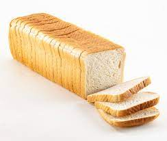

How to make Bread

This is a common type of food. However, we tend to buy it
from the market more often then to make one ourselves.
It is quite simple and cost efficient if we make one ourselves.
Ingredients:
- Warm water
- Active Dry yeast
- Granulated sugar or honey
- Salt
- Oil
- Flour
Steps:
- Proof the yeast: In a large bowl or stand mixer add the yeast, water and a pinch of the sugar or honey. Allow to rest for 5-10 minutes until foaming and bubbly.
- Prepare the dough: Add remaining sugar or honey, salt, oil, and 3 cups of flour. Mix to combine. Add another cup of flour and mix to combine. With the mixer running add more flour, ½ cup at a time, until the dough begins to pull away from the sides of the bowl.
- Knead the dough: Mix the dough for 5 minutes on medium speed. The dough should be smooth and elastic, and slightly stick to a clean finger, but not be overly sticky.
- First Rise: Grease a large bowl with oil or cooking spray and place the dough inside. Cover with a dish towel or plastic wrap and allow to rise in a warm place* until doubled in size (about 1 ½ hours).
- Punch the dough down really well to remove air bubbles.
- Divide into two equal portions. Shape each ball into long logs and place into greased loaf pans.
- Second rise: Spray two pieces of plastic wrap with cooking spray and lay them gently over the pans. Allow dough to rise again for about 45 minutes to one hour, or until risen 1 inch above the loaf pans.
- Bake: Adjust oven racks to lower/middle position. Preheat the oven to 350 F. Bake bread for about 30-33 minutes, or until golden brown on top. Give the top of a loaf a gentle tap; it should sound hollow.